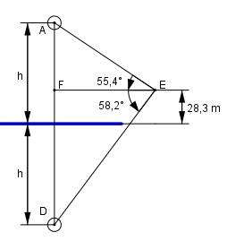

Aufgabe 202 Ein Ballon befindet sich auf der Höhe h und spiegelt sich in einem See. Von einem Punkt A aus, der sich auf einer Höhe von 28,3 m befindet, erscheint er unter dem Höhenwinkel α = 55,4°, sein Spiegelbild unter dem Tiefenwinkel β = 58,2°. In welcher Höhe h befindet sich der Ballon?

Im Dreieck AFE: h – 28,3 tan 55,4° = ----------- |*FE FE FE * tan 55,4° = h – 28,3 |:tan 55,4° h – 28,3 FE = ------------ tan 55,4° Im Dreieck FDE: h + 28,3 tan 58,2° = ---------- |*FE FE FE * tan 58,2° = h + 28,3 |:tan 58,2° h + 28,3 FE = ------------ tan 58,2° Gleichgesetzt: h – 28,3 h + 28,3 ------------ = ----------- tan 55,4° tan 58,2° Über Kreuz multipliziert: tan 58,2° * (h – 28,3) = tan 55,4° * (h + 28,3) h * tan 58,2° - 28,3 * tan 58,2° = = h * tan 55,4° + 28,3 * tan 55,4° |-h*tan 55,4° h * tan 58,2° - h * tan 55,4° - 28,3 * tan 58,2° = = 28,3 * tan 55,4° | + 28,3 * tan 58,2° h * (tan 58,2° - 55,4°) = = 28,3*(tan55,4° + tan58,2°) |:(tan58,2°-tan55,4°) 28,3 * (tan 55,4° + tan 58,2°) h = --------------------------------- = tan 58,2° - tan 55,4° 28,3 * (1,4496 + 1,6128) = --------------------------- = 531 m 1,6128 – 1,4496